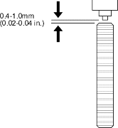
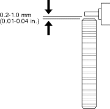
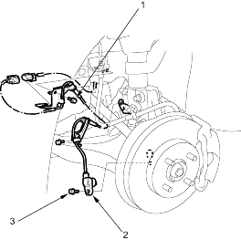
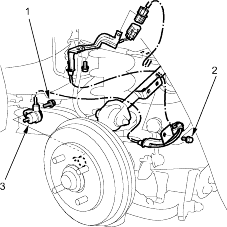

- Inspect the front and rear pulsars for chipped or damaged teeth.
- Measure the air gap between the wheel sensor and the pulsar all the way around while rotating the pulsar. Remove the rear brake disc to measure the gap on the rear wheel sensor. If the gap exceeds 1.0 mm (0.04 in.), check for a bent suspension arm.
Standard:
Front: |
0.4 - 1.0 mm (0.02 - 0.04 in.) |
Rear: |
0.2 - 1.0 mm (0.01 - 0.04 in.) |
Front:

Rear:

Front:

- 6 mm BOLT
9.8 Nm (1.0 kgf/m, 7.2 lbf/ft)
- WHEEL SENSOR
- 6 mm BOLT
9.8 Nm (1.0 kgf/m, 7.2 lbf/ft)
Rear:

- 6 mm BOLT
9.8 Nm (1.0 kgf/m, 7.2 lbf/ft)
- 6 mm BOLT
9.8 Nm (1.0 kgf/m, 7.2 lbf/ft)
- WHEEL SENSOR